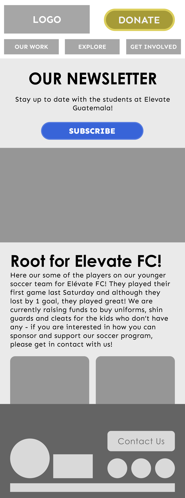
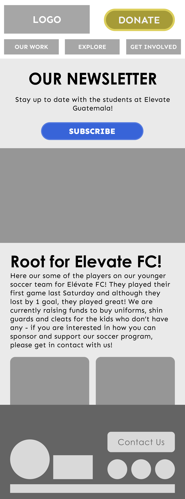

ELEVATE GUATEMALA
We conducted an expansive review, analysis, and redesign of the Elévate Guatemala website to make it a more effective tool for expanding awareness and donor response. These improvements will aid the nonprofit in achieving its goals of increasing access to education in underserved regions.
THE PROBLEM
Elévate Guatemala’s website is sometimes difficult to navigate. Learning about the organization's work requires watching a video and/or reading large amounts of text which users find cumbersome (if done at all).
THE SOLUTION
Redesign Elévate Guatemala’s website, focusing on ease of navigation and bite-sized information. User should quickly and easily grasp the organization's mission and impact.
MY ROLE
UX Researcher
UX/UI Designer
TEAM
Myself
Stephanie Lehnoff
Jin Chung
Erik Domnizky
TOOLS
Figma
Trello
Canva
Google Fonts
RESEARCH
-
PROTO-PERSONA
We began with a simple assumption of who would primarily be accessing the Elévate site and their motives for seeking out the organization. The proto-persona gave us a template to ask questions and research to prove or disprove attributes.

-
COMPETITOR ANALYSIS
Taking time out to research how other organizations operate gave us excellent context for the space in which these nonprofits exist. Looking at these sites analytically lets us see what works and what doesn't.

-
USER INTERVIEWS
We conducted five user interviews which helped us identify pain points and understand how users navigate through the current Elévate website. We compiled our findings into an affinity diagram and a few key takeaways (see "Define" section).
-
STAKEHOLDER INTERVIEW
Our interview with Elévate Guatemala's founder helped us identified the following:
- Elévate's mission goes beyond providing scholarships; it is dedicated to nurturing well-rounded individuals.
- Founder has concerns about website navigation and the navigation bar. She also feels the site's content is outdated.
- Founder expressed a desire to improve the visibility of the newsletter and provide additional information to the volunteer section on the website.
-
WEBSITE ANNOTATIONS
Armed with user and stakeholder insights, we analyzed the existing Elévate Guatemala website and identified specific areas of improvement:
- The size and placement of the logo needs improvement. Low color/weight contrast makes GUATEMALA illegible
- Primary Nav Menu can be more legible
- Mission statement can be more distinctive with better choice of font weight/size. Animation? Drop shadow? Better spacing?
- Overlapping the frame of the video clip and blue rectangular behind creates confusion. Length of the video can be appropriated. Blue rectangular is too wide, makes it hard to estimate the true width of the website.
- Confusion as to whether or not this is a button
- Descriptions appear over the images when hovered which is a nice touch
- Probably the least noticeable part on the page. Opportunity to show icons, charts, and/or statistics. Maybe a separate page with more in-depth info? Use of italic makes the layout look inconsistent.
- Simple icon can replace unappealing text button.
- Maybe introducing one or more colors can tone down the harshness of blue/white contrast

- Confusing page header. Mixture of links and heading text, plus an additional link that did not exist in the primary nav. Random use of italic.
- Wall of text - lots of text here that should be broken up into sub-pages for each program so each can shine.
- This first sub-head is very close to the page title and might get lost within the large amount of text.
- Fewer but bigger images can be more impactful. More harmonized alignment with text is needed.

- Outdated information. Generally this should be removed and the workflow to donate should be simplified.
- Stakeholder interested in making this more visible - they have found that a significant base of donors is more likely to give if they feel they are helping the org with actual goods. Additionally, the “to Elevte Guatemala” is assumed and therefore unnecessary.
- Opportunity for the Amazon logo for quick user identification. Additionally, data shows that in-kind donations are very popular because of their tangible impact. This giving option should be higher on the page and more obvious to users.
- Overall layout is confusing and unfamiliar. The user has no clear guidance on how to navigate or read this page.

DEFINE
-
KEY USER INSIGHTS
Initial Impression and Design
Users generally find the website visually appealing and user-friendly. They appreciate the simplicity and clarity. Most like the logo but mention that it might be too big, and they find the mission statement to the point.
Navigation and Ease of Finding Information
Users find the navigation intuitive but need clarity to locate the critical sections, such as donation options, projects, and contact information, without difficulty.
Engaging Features
Users particularly appreciate using a video as a hero image, which helps convey the mission. However, some users think the video is too long, suggesting a need for a shorter version or clear video navigation options.
-
AFFINITY DIAGRAM
We gathered all the facts/thoughts/and ideas gained from user interviews and organized them into actional sections: "Likes," "Needs & Goals," and "Pain Points." "Likes" we would work to maintain on the redesigned site. "Needs & Goals" provided usable objectives."Pain Points" were issues that needed resolution.

-
PROBLEM STATEMENT
How might we redesign Elévate’s website to present Program and Scholarship information in a clear, easily digestible format that empowers passionate individuals interested in supporting education in developing nations, ultimately increasing user engagement confidence and driving more donations to the organization?
-
USER JOURNEY MAP
-
USER PERSONA
Gathering and defining these insights and viewing them through our problem statement allowed us to understand better who our user is, our User Persona.

-
UX HYPOTHESIS
Updating the outdated website to enable the purchase of tangible goods (through the Amazon Wishlist) and prominently featuring volunteer opportunities will enhance user engagement, increasing donations and volunteer sign-ups.
-
VALUE PROPOSITION
Elévate Guatemala provides access to quality education, literacy programs, and diverse, enriching experiences, transforming young lives and opening doors to brighter futures. Your support creates opportunities and broadens horizons, helping us build a more educated, skilled, and empowered generation in Guatemala.
IDEATE
-
SKETCHES

-
SITE MAP
Original Site Map

Redesigned Site Map
During our redesign, we reorganized the information architecture around users' three core questions when learning about Elévate Guatemala: Who they are, what they do (focusing on successes), and how the user can help.

-
USER FLOW
This redesigned sight map creates a seamless user flow that minimizes excessive clicking and instills user confidence in each click they make.
-
STORYBOARD
PROTOTYPE
-
WIREFRAMES
Navigation
After working through the information layout, we could return to our initial sketches with this new navigation in mind, which considerably sped up the nav bar's prototyping process.


Primary Pages
The design kept primary pages that linked to sources simple and repeatable. We focused on maintainability through the primary and secondary pages since the Elévate organization is still small, and a staff web developer is an unwarranted extravagance.
 


Secondary Navigation
Informational secondary pages are all kept consistent throughout the design. For one-off pages, we continued to use our previously employed components and kept custom one-page-only elements to an absolute minimum.


STYLE GUIDE
We developed a unified style tile which made building our high-fidelity prototypes less time-consuming. This style tile would also serve as a deliverable to the stakeholder to guide future site development and branding guidelines. We kept the specific value of blue that the stakeholder associated strongly with its brand and used it as a jumping-off point to build the rest of the organization’s color palette.
Included are iconography guides, typefaces and weights, and directions on how, when, and what style of photography is to be employed in communications. We restricted typefaces to those available under the SIL Open Font License to promote stewardship and respect the funds that keep Elévate Guatemala in operation.

HIGH-FIDELITY WIREFRAMES
A solid style guide and thoughtfully-built wireframes made styling the primary and secondary pages a cinch. However, we sometimes ran into issues with a lack of content even when pulling from the organization's social media presences, like Instagram and Facebook.
Full prototype accessible in "Conclusion" section


TEST
-
ITERATIONS
Testing our high-fidelity wireframes with potential users provided helpful feedback on our navigation bar, homepage layout, and footer design.
Using this feedback, we changed our hero image, reorganized homepage content elements, and changed the vague “Explore” verbiage on the nav bar to the more clear “About Us.”

CONCLUSION
-
FINAL OUTPUT
Integrating these iterations, we created the following desktop and mobile prototypes. These two prototypes are descended from the same group of components, so building the website in a genuinely responsive fashion will be significantly less costly since each element will only need to be engineered once and can then be pushed and pulled as the viewport demands.
Desktop Prototype
Mobile Prototype -
NEXT STEPS
This effective redesign sprint resulted in thoughtful, actionable deliverables for the stakeholders which we provided after the project concluded. Potential next steps would include taking a more holistic view of the Elévate Guatemala web presence and designing a style-compliant series of templates for the stakeholder employ on the organization’s social media accounts. Adjacent to those templates would be a look at the current newsletter template used, adjusting it to match the prescribed style guide and creating better guidance on the voice that should be used and nurtured in these communications.
Creating one cohesive brand image is the objective for these next steps. Deliverables for such a task would be comprehensive, alleviating the workload for Elevate Guatemala's senior staff and allowing them to concentrate on their core mission.
-